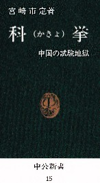
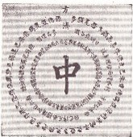

参議院選挙もたけなわ、こんな田舎市にも候補者がくる。ところで議員を選ぶんだから選議とか選議員のはずだが、なぜ選挙というのか。じつはこれは古代中国のせい。
むかしの中国王朝に科挙という国家試験制度があった（科目別に挙人（きょじん＝合格者）を選抜する という意味の短縮形）。挙人は挙国（国を挙げて）とか挙兵（兵を挙げて）と同じで、‘人を挙げる’という意。そこで挙人（合格者）を選抜することを選挙と称した。あ、元ネタはこの本ね(^-^；

科挙に合格さえすれば たとえ庶民でも、高級官僚 大臣 宰相も夢ではない。そこで多くの人がチャレンジしたが、これが ものすごく難しい試験。どれくらい難しかったか現在とは比べようもないが、たぶん小学生が東大へ合格するより10倍くらいムズカしかった。選挙とは そんな試験の合格者を意味しているんだから、当選した各議員は お利口さんばかりの筈なんだが....
それはともかく科挙にはメインの試験が解試（かいし＝郷試（きょうし））、会試（かいし）、殿試（でんし）の３種類あった。そしてそれぞれの首席を解元（かいげん）、会元（かいげん）、状元（じょうげん）と呼んだ。
１回でも首席で合格すればたいしたもんだが、中には３試験とも首席で合格した人もいたらしい。首席の称号にはすべて元という字がついている。そこで３試験とも首席で合格することを三元中選（三つの元の選に中（あた）る）と呼んだ。麻雀の大三元というアガリ役は、この三元中選の意味というのが現在の定説。※他にも１月１日の意味（１年と１月と１日の元（はじめ））とか、上元（じょうげん）中元（ちゅうげん）下元（かげん）の意味とか いろんな説がある。
合格者名は試験場に名前を張り出して広報したが、真んなかに赤色で大きく中と書き（‘大中（あた）り’の意）、回りを丸く囲むように氏名を表記した（一番上につきだして書かれているのが首席合格者）。麻雀の は、たぶん これを表していると思われ。 は、たぶん これを表していると思われ。
同書p27
そう云えば 少し前に明石散人（あかしさんじん）という人が、「むかしは黒色の役牌がもう１種類あって、大三元ではなく大四元という役があったのではないか」という珍説を発表したことがあった。そりゃま 科挙が３段階ではなく４段階で、四元中選という言葉も残っているというなら その可能性もあるけど(^-^；
オマケ
最初の公式試験である解試（郷試）に合格して めでたく挙人にになると、新挙人を招いて盛大に祝賀の宴が催された。この祝賀の宴を「鹿鳴（ろくめい）の宴」という。明治時代、政府が鹿鳴館という社交場をつくったが、この名前は「鹿鳴の宴」に由来している（鹿鳴の宴という名称の由来は知らないが、たぶん中原に鹿を追うという主旨と思われ）。※鹿は財産や名誉を表している。
|